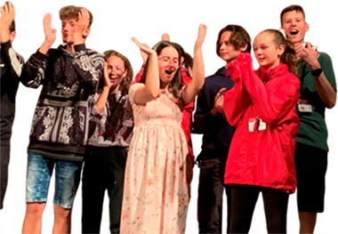

Рада нашему знакомству!
Елена Попутаровская
руководитель, кандидат педагогических наук, эксперт по программам образования за рубежом, преподаватель-переводчик английского и французского языков, официальный представитель образовательных организаций Великобритании и США в России.

Некоммерческое образовательное учреждение “Гуманитарный центр образования и карьеры “Английский Клуб” с опытом и традициями существует более 20 лет.
Если Вы хотите знать иностранные языки – эта страница для Вас. Вам предстоит непростая задача выбора: либо быть как и раньше вечно изучающим, либо перестать повторять неверные шаги и начать спокойно жить и учиться в среде единомышленников, самим формируя иноязычную атмосферу. Вы будете говорить, читать, писать на выбранном Вами языке, понимать собеседника.
Вы сможете активно совершенствоваться в своей языковой практике. Мы празднуем все большие Британские и Американские праздники: Рождество, День Благодарения, День Святого Валентина. Вечера и фуршеты с танцами, песнями, беседами и только на изучаемых языках, выезды за город. Будьте с нами. Общность интересов, дух творчества – это наш клуб!